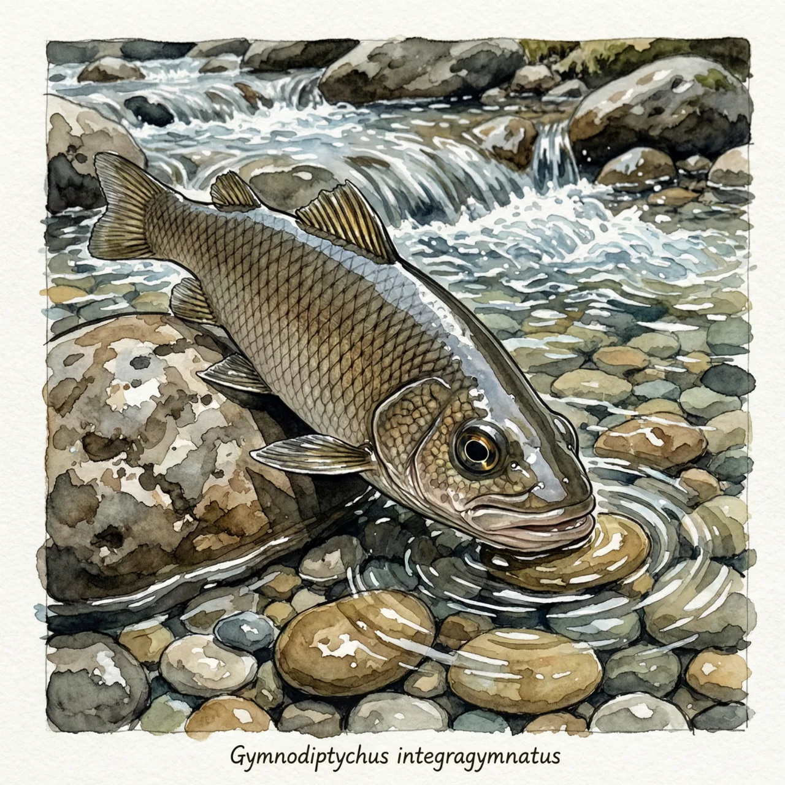
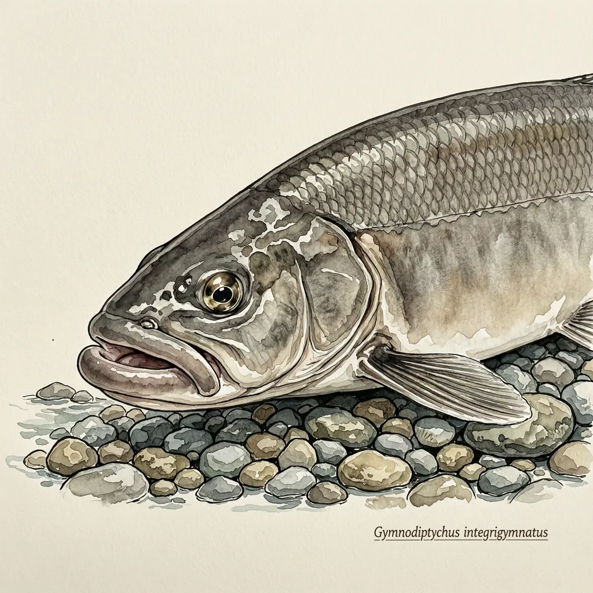

全裸裸重唇鱼是鲤科裸重唇鱼属的小型鱼，俗名冷水花，体长可达12.9公分，已知分布记录都在云南腾冲属于伊洛瓦底江水系的几条小河。它的学名里连用了两次裸，指这条鱼通体近乎无鳞，生活在流动的冷水里。IUCN红色名录将其评为易危。
桃花园小河是云南腾冲瑞滇滇滩的一段山溪，水面不宽，河底铺着卵石——全裸裸重唇鱼就生活在这样的水里。它已知的分布记录都在腾冲县境内，瑞滇滇滩桃花园小河、东营和明光的小河是它已知的家，这些水流属伊洛瓦底江水系陇川江的上游支流，最终向南流入缅甸；物种的模式产地同样在瑞滇与明光。成体身长12.9公分，在浅水的砾石缝隙间正好转身。它还有个俗名，冷水花。
在流水里吃饭，嘴长在哪儿很要紧。全裸裸重唇鱼口位偏下，上下唇肥厚，这是鲤科裸重唇鱼属这一类急流鱼的典型配置：嘴朝下贴住河底的卵石，把石面着生的藻类和微生物刮下来吃。水流再急，它的食物始终贴在石头表面，不在水层里。'重唇'两个字说的就是这对口唇，'冷水花'这个俗名则交代了它待的水有多凉。
最容易被当成笔误的是名字：'全裸裸重唇鱼'连着两个裸，这不是重复。属名 Gymnodiptychus 前半截 gymno- 意为裸露，种加词 integrigymnatus 意为通体裸露——Huang 在1981年命名时，觉得属名里的'裸'还不够，又在种名里把'全'字强调了一遍，指这条鱼身上几乎找不到鳞片。中文名只是把拉丁文的意思老实直译了出来。IUCN红色名录把它评为易危，上游小河的筑坝与采砂正在改变这些流水浅滩。对一条离不开冷急水的鱼来说，门口那条河变了，就没有第二条河可搬。
